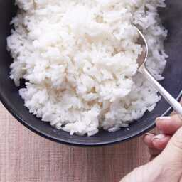

How to make rice

Ingredients
Steps
- Put 2 medium cups of rice in a strainer and clean with water
- Put a small amount of oil in a pot with high heat with cut onions and stir every 30 seconds until brown
- Put the rice in and stir it for 30 seconds
- Add 3 cups of water in the pot, add salt and wait until the water starts to boil, turn the heat off put the lid on and wait
- DON'T STIR THE RICE!
- After 10-15 minutes the rice should be done
- Enjoy!
Go back